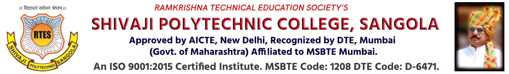

| Home |
About |
Department |
Administration |
academic |
Commitees |
Faculties |
Library |
Alumini |
Media Corner |

WELCOME TO SHIVAJI POLYTECHNIC COLLEGE, SANGOLA
Ramakrishna Technical Education society (RTES) was established in the year 2007 under the able
guidance and dynamic leadership of Hon. Mr. B. R. Gaikwad with an objective of imparting quality
education in the field of engineering. Education campus is ideally located in pollution free and
barrier free environment conducive for learning. RTES offers various courses like Computer Engg,
Mechanical Engg., and Civil Engg. and Electronics and Tele-Communication Engg. RTES provides
quality infrastructure including spacious workshop, well- equipped computer labs, English
language lab, well-stocked library and big play ground.
OUR DEPARMENT
| Computer Department |
Cevil Engineering |